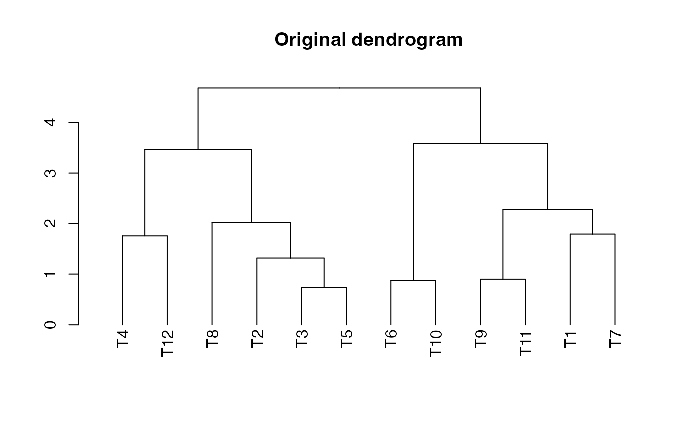
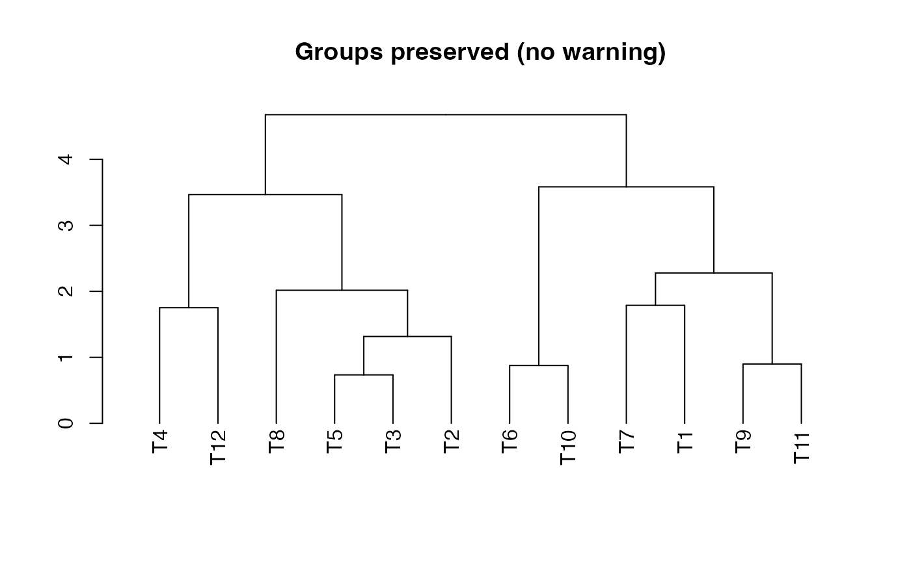
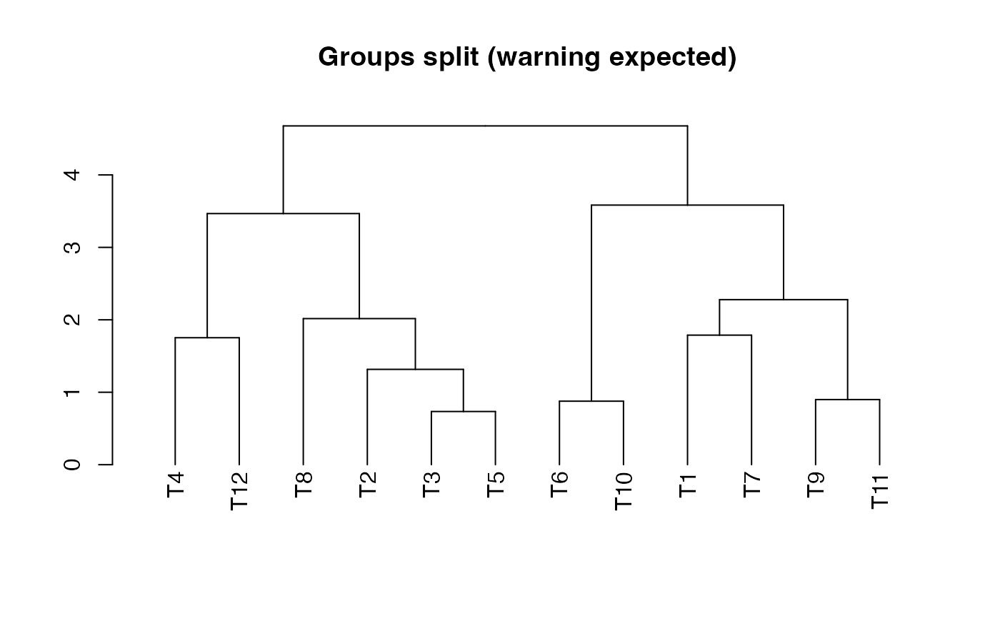

Reorder a dendrogram to keep specified groups of tips adjacent
Source:R/reorder_dend_by_groups.R
reorder_dend_by_groups.RdThis function reorders the tips (leaves) of a dendrogram so that elements belonging to predefined groups appear together. This is useful in hierarchical clustering visualization where it is desired to have clusters or groups to appear contiguously.
Examples
set.seed(42)
mat <- matrix(rnorm(12*3), nrow = 12)
rownames(mat) <- paste0("T", 1:12)
# Hierarchical clustering
hc <- hclust(dist(mat))
dend <- as.dendrogram(hc)
# Plot
plot(dend, main = "Original dendrogram")

# Groups that align with the dendrogram structure
#'
groups_preserved <- list(
GroupA = c("T1", "T2", "T3"),
GroupB = c("T4", "T5", "T6"),
GroupC = c("T7", "T8")
)
dend_preserved <- reorder_dend_by_groups(dend, groups_preserved)
#> Warning: The following groups could not be kept together due to dendrogram topology constraints:
#> T1, T2, T3
#> T4, T5, T6
#> T7, T8
plot(dend_preserved, main = "Groups preserved (no warning)")

# Define groups that do NOT align with dendrogram
# These tips are far apart in the dendrogram
groups_split <- list(
GroupX = c("T1", "T5", "T9"),
GroupY = c("T2", "T6", "T10")
)
dend_split <- reorder_dend_by_groups(dend, groups_split)
#> Warning: The following groups could not be kept together due to dendrogram topology constraints:
#> T1, T5, T9
#> T2, T6, T10
# Plot
plot(dend_split, main = "Groups split (warning expected)")
